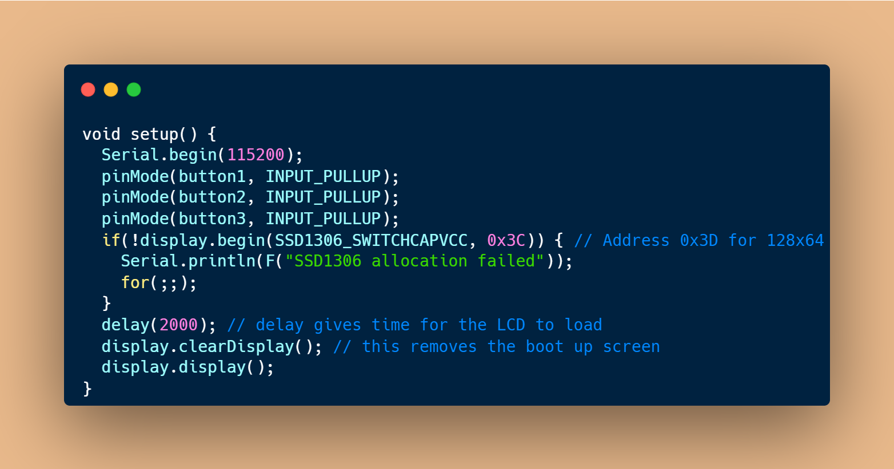
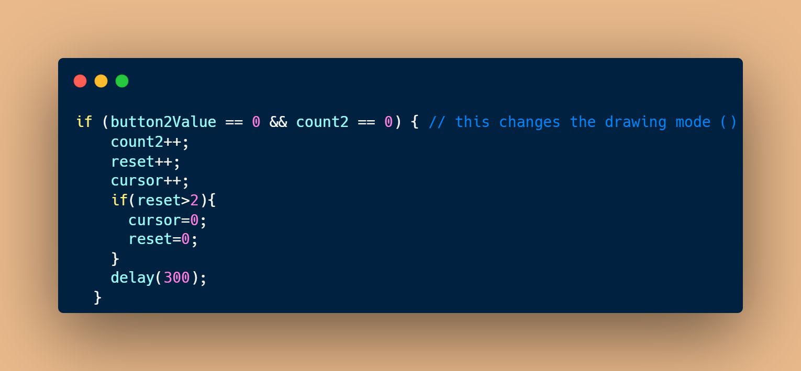

This imports the libraries for the OLED display to work.
The OLED display is 128x64 pixels.
This is the decloration for the OLED display.
Variables for the buttons, potentiometers, etc.

Pinmode for the buttons. The if statement ensures that the display uses 3.3V. If it dosent the program will loop forever before it starts.
This reads the values for the buttons and potentiometers and maps the potentiometers to the dimensions of the screen.

This is where the drawing happens.
This updates the display whenever anything is drawn.
Clears the display when the green button is pressed.
When the blue button is pressed this changes the drawing mode. If the buttons is pressed more than two times the drawing mode is reset to the default.
When the green button is pressed the size of the cursor changes. If the button pressed more than three times the cursor size returns to normal.
This makes sure that nothing strange happens when the buttons are held down.